Particle Editor：基本・応用・ノード操作
選択中の GameObject に付いた Particle Emitter を、Scene View で見ながら調整するエディターです。Effekseer Emitter や Effect Stack とは別の仕組みなので、既存のエフェクトを置き換えず併用できます。
基本：初めての粒子を出す
- Hierarchy で Particle Emitter を付けたい GameObject を選びます。Scene View から選んでも構いません。
- Window > パーティクルエディタを開きます。
- Emitter がまだなければ Emitter を追加を押します。既に付いている場合は、その設定が表示されます。
- 滝など水面へ落とす例では、+作成 > Water > Lakeで WaterBody を追加します。
- Particle Editor の 広い噴流、火花、渦のいずれかを選びます。設定は選択中の Emitter に反映されます。
- Water ノードを選び、水面との相互作用で 着水エフェクトを設定します。
- テスト発生で確認し、粒子を消去でプレビューを片付けます。
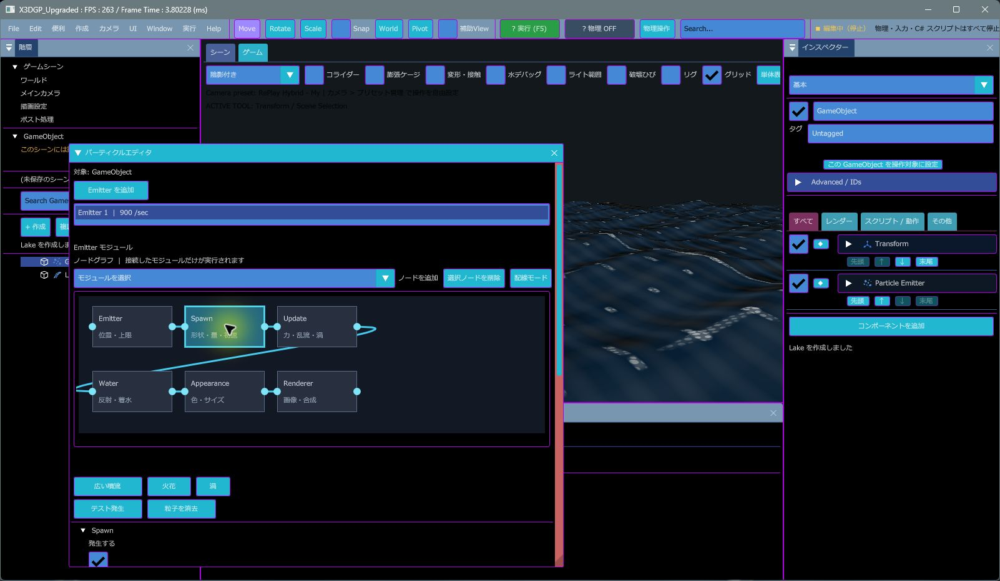
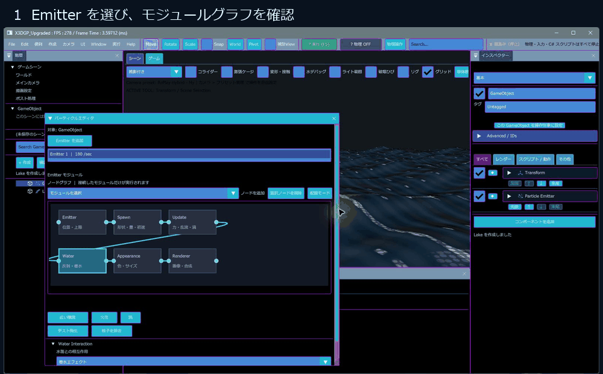
応用：モジュールを順に調整する
値を変えると選択中の Emitter に反映されます。まずプリセットを選び、見た目が近い状態から少しずつ調整すると作業しやすくなります。
| モジュール | 調整内容 | 使い方の目安 |
|---|---|---|
| Spawn | 発生の有効・無効、毎秒の数、寿命、初速、形状、半径・箱の大きさ、方向、拡散、ばらつき | 滝の幅は発生箱の横幅、粒の密度は発生量、流れる長さは寿命と初速から合わせます。 |
| Update / Forces | 重力、抵抗、風、乱流、渦 | 上向きの細流には負の重力、広がりには乱流、回り込みには渦を少量ずつ足します。 |
| Water | 水面との反射や着水イベント | WaterBody と併用する機能です。水面のない位置で効果が出ない場合は、水面側の配置と範囲を先に確認します。 |
| Appearance | 開始・終了サイズ、サイズカーブ、開始・終了色、不透明度カーブ、回転速度、発光 | 透明感は色のアルファと寿命末尾のアルファを調整します。大きさを寿命で変えると粒の消え方が滑らかになります。 |
| Renderer | スプライト画像や合成モード | 画像なしなら標準粒子で形を確認し、必要な場合にスプライトを追加します。 |
| Simulation | CPU / GPU シミュレーションや同時粒子数 | 多数の粒では GPU 駆動が向きます。対応する Water 連携など個別機能の条件も確認してください。 |
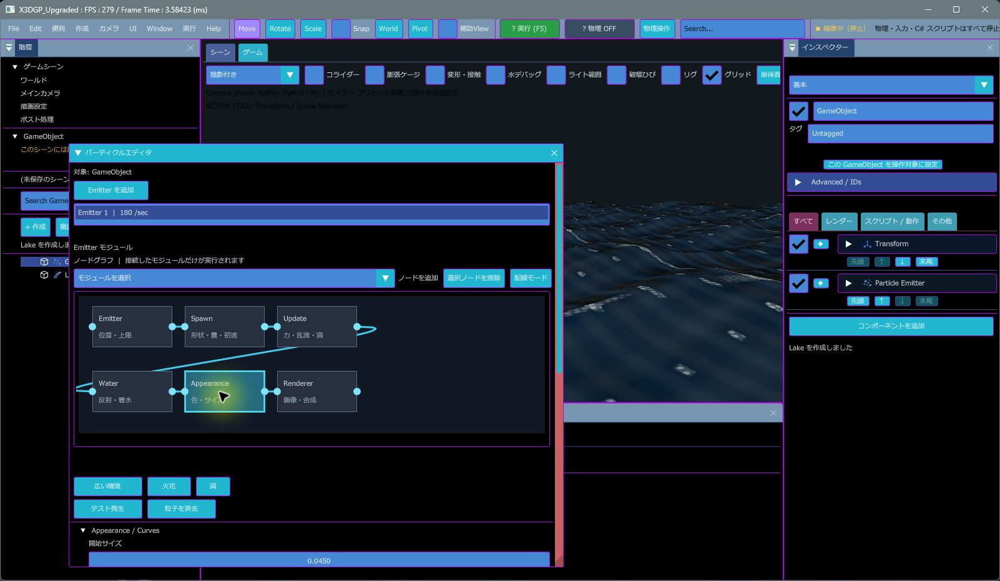
プリセット3種の使い分け
| 例 | 向く形 | 実機で確認した値の例 |
|---|---|---|
| 広い滝 / Niagara | 横に広い発生面から下向きに流す構成 | 発生量 900/s、寿命 1.8 秒、初速 0.35、箱幅 2.4、拡散角 0.06。 |
| 火花 | 短命で速い粒を球状に飛ばす構成 | 発生量 180/s、寿命 0.7 秒、初速 4.0、球半径 0.12。 |
| 渦 | 広めの球から出し、渦や乱流で回り込ませる構成 | 発生量 420/s、寿命 2.5 秒、初速 0.65、球半径 0.9。 |
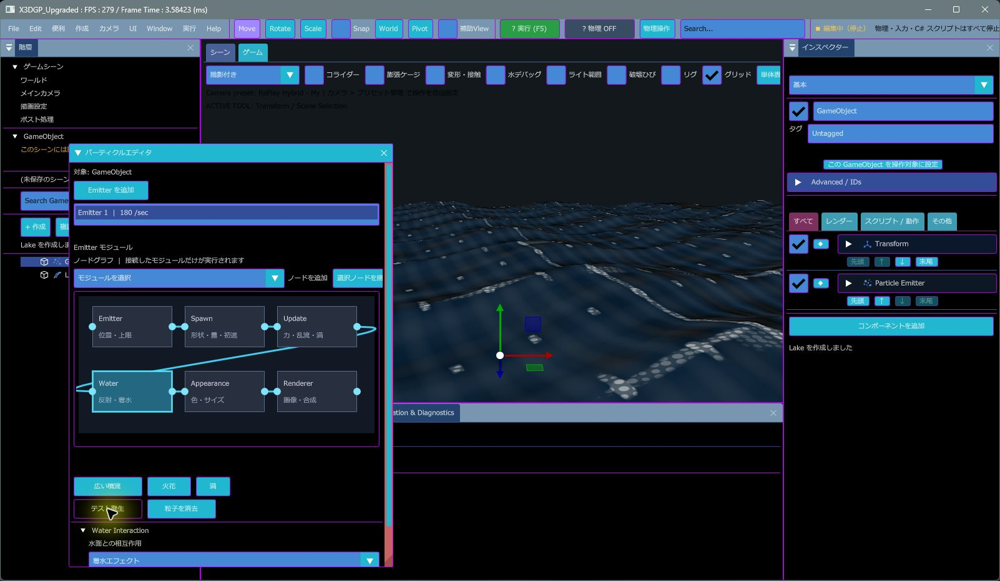
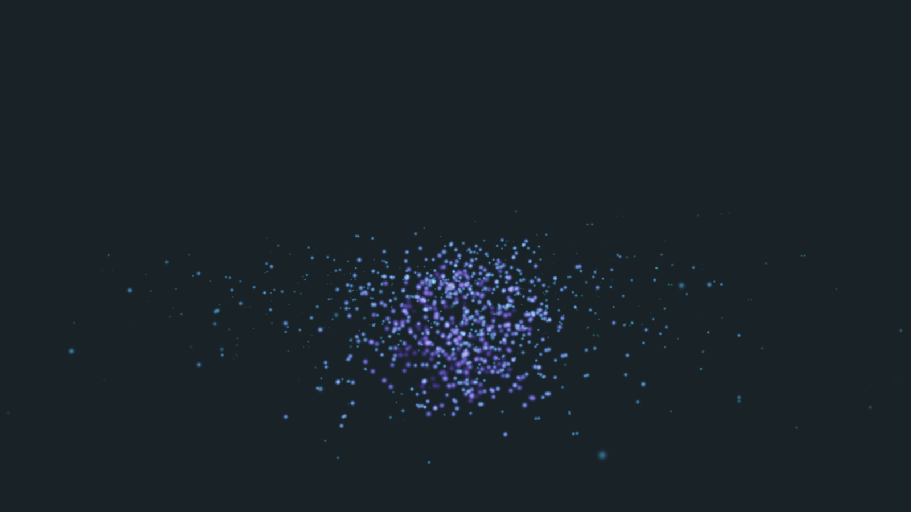
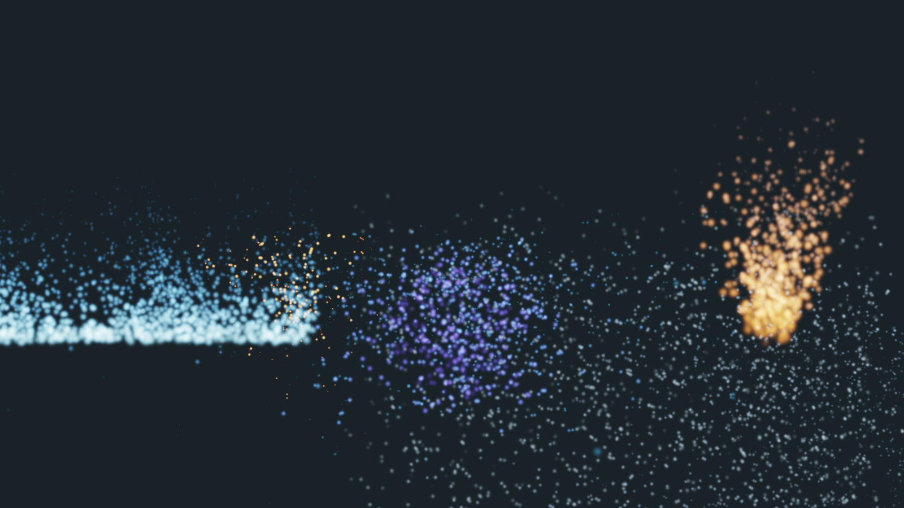
サンプルシーン別の実行画像
各画像は Release 実行ファイルでサンプルシーンを読み込み、60フレーム実行した時点の画面です。エフェクトの形と色の違いを見比べられます。GPU粒子の間接描画をフレーム計測へ加算する修正後、ParticleGallery は終了コード0、最大 objects=7 / components=14 / draw_calls=5、追加5シーンはそれぞれ終了コード0、最大 objects=3 / draw_calls=1 を確認しました。
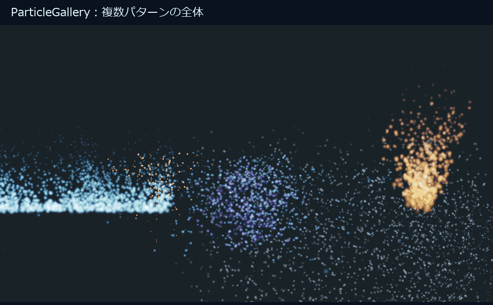
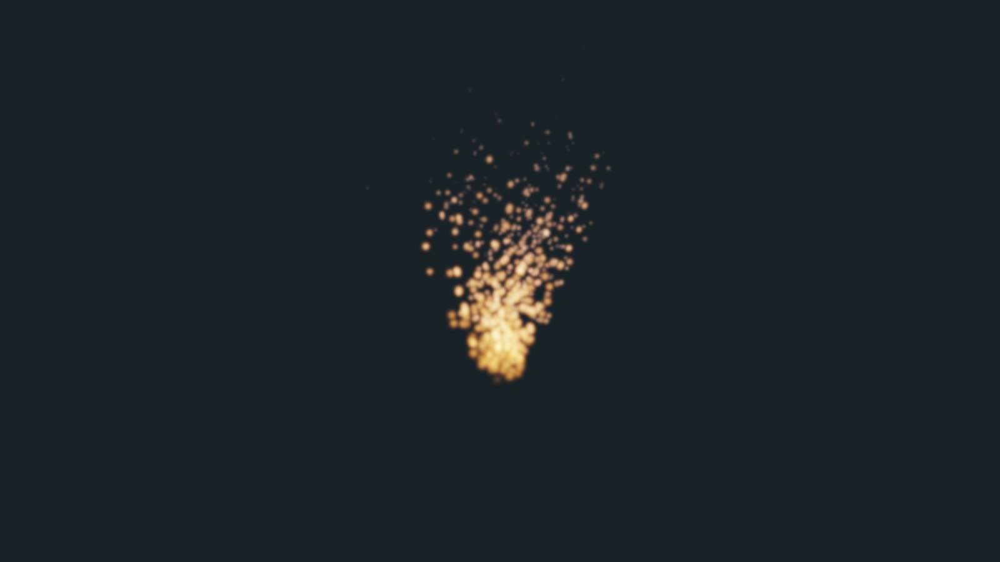
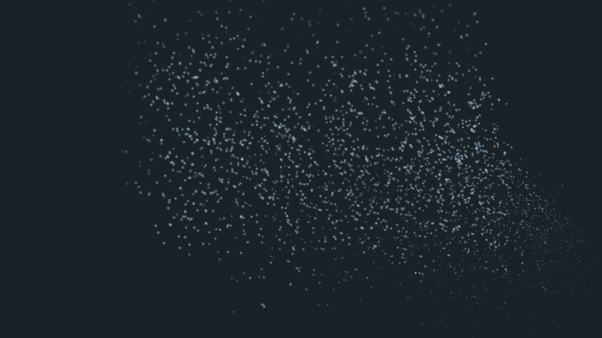
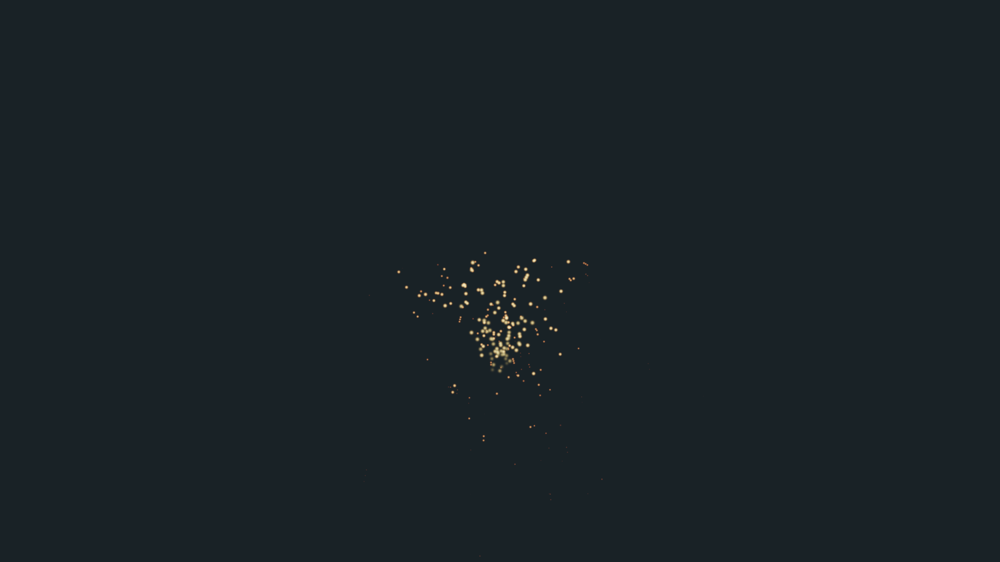
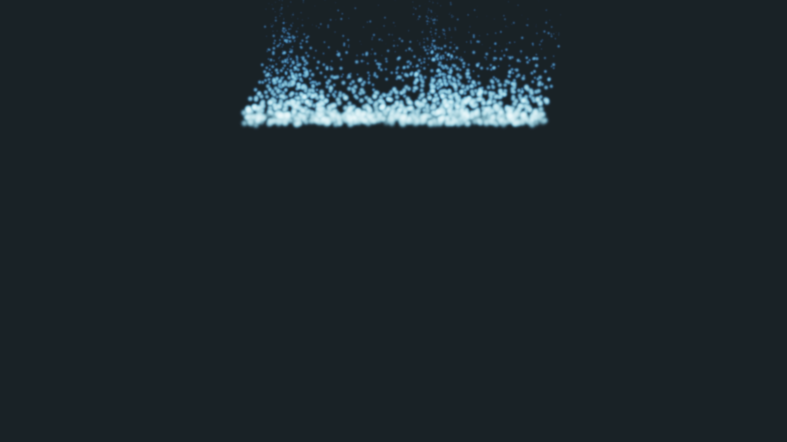
ノード編集画面
Hierarchyで対象GameObjectを選択し、Window > パーティクルエディタを開くと、そのGameObjectのEmitter設定とノードグラフを編集できます。Emitterが付いていない場合は「Emitter を追加」を使います。編集は選択中のGameObjectに保存されます。
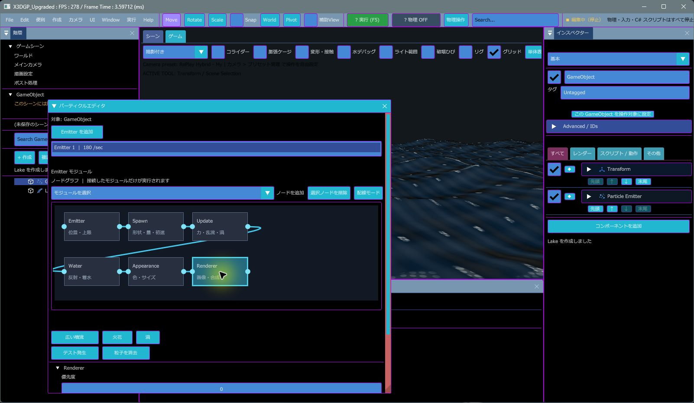
| 操作 | 手順 | 結果 |
|---|---|---|
| 設定を開く | GameObjectを選択し、Window > パーティクルエディタ。複数EmitterはEmitter Stackから選びます。 | グラフと選択中モジュールのプロパティが表示されます。 |
| パラメータ編集 | グラフのノードをクリックし、下のInspector欄を変更します。 | Emitter、Spawn、Update、Water、Appearance、Rendererの項目に切り替わります。 |
| ノード配置 | ノードをドラッグします。 | 配置が保存されます。シーンのUndo/Redo履歴にも記録されます。 |
| ノード追加 | 「ノードを追加」から未配置のモジュールを選びます。 | Spawn、Update、Water、Appearance、Rendererを追加できます。Emitterは入口として残します。 |
| 配線 | 接続元ノードを選択して「配線モード」を押し、後段ノードをクリックします。「配線キャンセル」で中止できます。既存配線を同じ操作でクリックすると切断します。 | Emitterから到達できる接続済みモジュールだけが評価対象になります。逆方向の配線は作れません。 |
| ノード削除 | 削除したいノードをクリックして「選択ノードを削除」を押します。 | ノードとその入出力配線が消えます。Emitterは削除できません。 |
| 取り消し | エディタのUndo / Redoを使います。 | 追加、削除、接続、配置とコンポーネント設定が編集履歴に入ります。 |
初期状態は Emitter → Spawn → Update → Water → Appearance → Renderer です。任意のスクリプトノードや同種ノードを何個も置く汎用グラフではなく、既存のParticle Emitter機能をノードで組み替える編集画面です。段階を飛ばす場合は、上流のノードから飛び先へ接続し、その配線を切る場合は同じ接続操作を繰り返します。切れた段階より下流は実行されません。
実機検証の範囲：Release版を起動し、新規シーンで WaterBody と Particle Emitter を作成して操作しました。Emitter、Spawn、Water、Appearance、Renderer の選択、Appearance ノードの削除と追加、Water→Appearance→Renderer の配線、配線モードの開始と解除を確認しています。ノードのドラッグと Undo/Redo は未確認です。初期ウィンドウ幅では右側の操作ボタンが見切れるため、Particle Editor の右端をドラッグして広げてください。
保存と併用
- 値を変更したら、いつものシーン保存で .replayscene に保存します。プリセットは選択中 Emitter の設定値を書き換えます。
- 一度の効果に複数の形を重ねたい場合は、同じ GameObject に複数の Particle Emitter を付けて使います。
- 既存の Effekseer Emitter や Screen / Model / UI Effect Stack は別機能としてそのまま併用できます。
記録方法
操作順を示す GIF は、Release版を実際に操作して撮影した6枚の画面キャプチャから作成しています。連続録画の MP4 はこの環境の画面録画アプリから取得できていないため未収録です。Runtime画像はRelease実行ファイルで各サンプルシーンを実行して撮影しました。